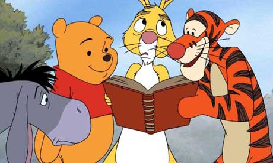
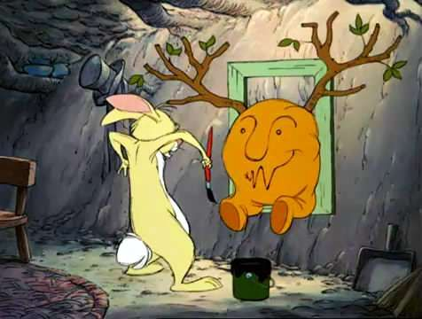

Rabbit is one of the 2 real animals that are recognized by their actual animal names in A.A Milne’s children’s story books. Since he is a real animal it is considered that he has brains and the same goes for Owl. He actually makes this clear in a conversation with Owl where he say “You and I have brains. The others have fluff”. He is pushy and takes his own decisions, is able to spell better compared to all the other animals. He is quite certain about the important things in his life. What he likes doing most is organizing a plan and to lead group events, even if nothing gets done. He is unhappy if anyone disturbs or interrupts him while he is engaged in any kind of activity, he doesn’t like being bounced either. He relishes gardening and his favourite food is the carrot and other vegetables, he makes it a point to avoid Pooh during lunch time.
 